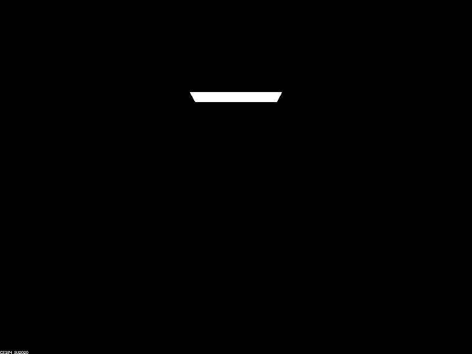
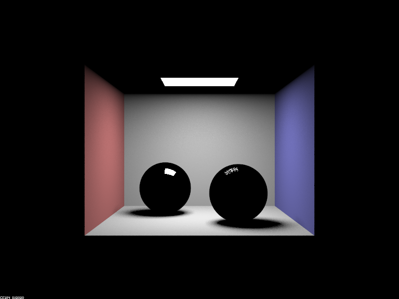
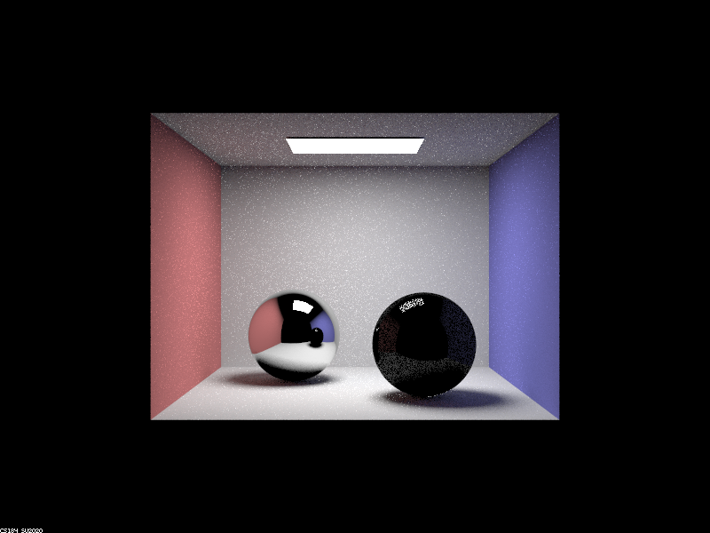
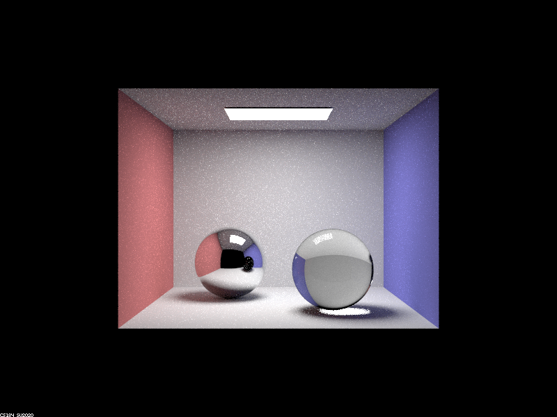
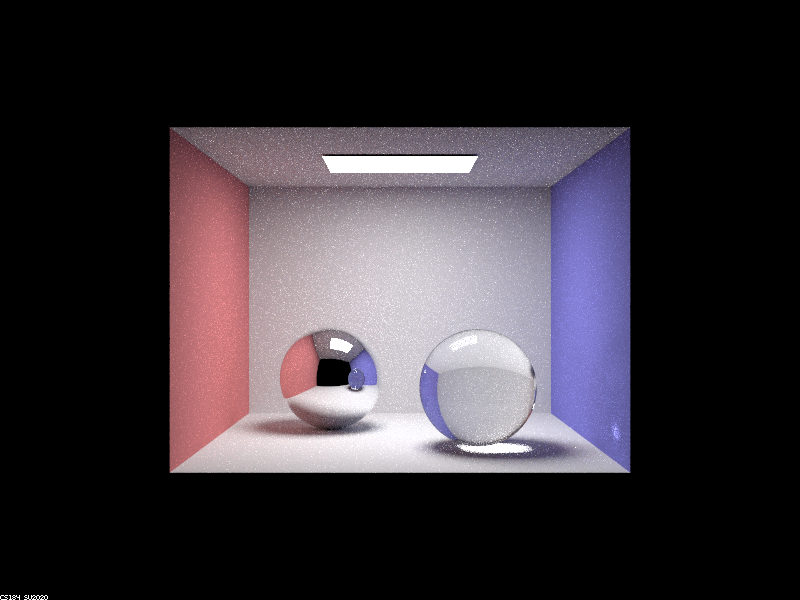
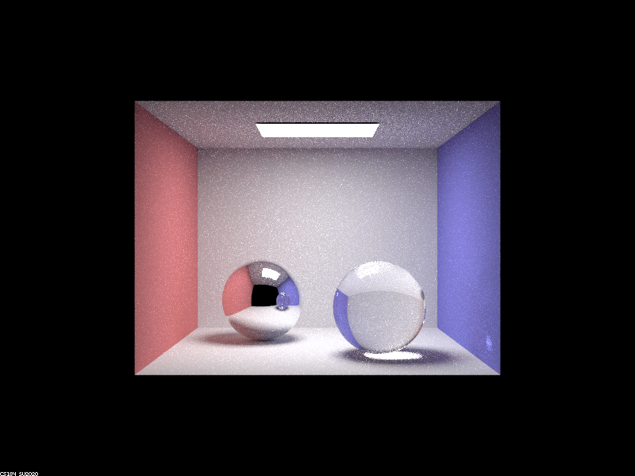

Use this section to write an overview of the assignment. All of the text in your write-up should be in your own words. If you need to add additional HTML features to this document, you can search the http://www.w3schools.com/ website for instructions. To edit the HTML, you can just copy and paste existing chunks and fill in the text and image file names appropriately.
If you are well-versed in web development, feel free to ditch this template and make a better looking page. Just make sure that you include all the components as we've laid them out here.
Part 1: Ray Generation and Intersection
|

|

|
|

|

|
|
|

|
|

|
Max Ray Depth 0: There are 0 bounces of light, so you can see self-emissive objects aka the area light
Max Ray Depth 1: There is 1 bounce of light where we can now see some direct light illuminating. So as you can see we are seeing some of the highlights on the spheres.
Max Ray Depth 2: There are now 2 bounces of light causing indirect illumination. We can now see that the left sphere can now mirror its surroundings. The right sphere which is supposed to be glass is starting to reflect and refract some light.
Max Ray Depth 3: With 3 bounces of light we see the right glass sphere becoming more glass-like with it actually reflecting and refracting most of the light. Also you can see light refracted under the glass ball. The mirror ball looks more or less the same as with 2 light bounces.
Max Ray Depth 4: With 4 light bounces the reflection of the glass ball in the mirror ball it's finally glass like and no longer dark. Also the glass ball becomes glossier more glass light due to the added light bounce. Also the white spot due to the reflection of light from the glass ball is finally starting to appear on the purple wall.
Max Ray Depth 5: With 5 light bounces The picture doesn't change too much. Light bounces and more reflection and refraction the picture is brighter and a little less noisy.
Max Ray Depth 100: Now that we have 100 light bounces the resulting picture actually is not too different from the pictures with 4 and 5 light bounces. With all these added light bounces we can see that the picture is brighter and a little less noisy, but overall nothing much has changed.
Describe what you did in Part 1. etc...

|
Here is an example of how to include a simple formula:
a^2 + b^2 = c^2
or, alternatively, you can include an SVG image of a LaTex formula.
This time it's your job to copy-paste in the rest of the sections :)
A Few Notes On Webpages
Here are a few problems students have encountered in the past. You will probably encounter these problems at some point, so don't wait until right before the deadline to check that everything is working. Test your website on the instructional machines early!
- Your main report page should be called index.html.
- Be sure to include and turn in all of the other files (such as images) that are linked in your report!
- Use only relative paths to files, such as
"./images/image.jpg"
Do NOT use absolute paths, such as"/Users/student/Desktop/image.jpg"
- Pay close attention to your filename extensions. Remember that on UNIX systems (such as the instructional machines), capitalization matters.
.png != .jpeg != .jpg != .JPG
- Be sure to adjust the permissions on your files so that they are world readable. For more information on this please see this tutorial: http://www.grymoire.com/Unix/Permissions.html
- And again, test your website on the instructional machines early!